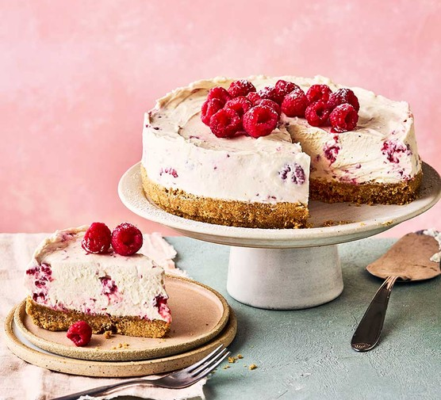

Recipes !!!
- Macrons
- Cheesecake
- Brownies
Favorites Recipes
Hello. On this page, I will teach you how to make a few desserts me and my friend like. We'll go over Ingredients and steps to make each one. Today we'll learn about macarons, cheesecakes, and Brownies!!


Me and a friend love baking these recipes
Step-by-step recipes :)
Macarons
Ingredients
- 1 and 1/3 almond flour
- 1 and 1/3 powdered sugar
- 1 cup granulated sugar
- 1 cup egg whites
- 1/3 cup water
- Food coloring (optional)
Steps
- Meringue:
- In a saucepan, combine granulated sugar and water. Heat over medium heat until the sugar dissolves and the syrup reaches 244°F.
- While the syrup is heating, start whipping the egg whites in a clean, dry bowl until soft peaks form.
- Once the sugar syrup reaches 244°F, pour it in a slow, steady stream into the whipped egg whites. Continue whipping until stiff, glossy peaks form. This is your Italian meringue.
- Macaronage:
- Gently fold the almond flour and confectioners' sugar mixture into the Italian meringue using a spatula. This process is called macaronage. Fold until the batter becomes smooth, and it falls off the spatula in a ribbon-like consistency. Be careful not to overmix.
- Pipe Macaron Shells:
- Transfer the batter into a piping bag fitted with a round tip. Pipe small rounds onto parchment paper or a silicone baking mat, leaving space between each round.
- Rest and Preheat:
- Let the piped macarons rest at room temperature for about 30-60 minutes until a skin forms on the surface. This helps create the characteristic feet of macarons.
- Preheat your oven to 300°F.
- Bake:
- Bake the macarons in the preheated oven for about 12-15 minutes or until they have risen and developed feet.
- Cool:
- Allow the macarons to cool completely before attempting to remove them from the baking surface.
- Fill:
- Once cooled, match up similar-sized macaron shells and fill them with your choice of ganache, buttercream, jam, or other fillings.
- Enjoy:
- Allow the filled macarons to mature in the refrigerator for 24 hours before enjoying for the best flavor and texture.
Final Result !!

(Note: results may vary)
Cheesecake
Ingredients
- 2 cups graham cracker crumbs
- 1/2 cup melted butter
- 4 packages (8 ounces each) cream cheese, softened
- 1 cup granulated sugar
- 1 teaspoon vanilla extract
- 4 large eggs
- 1 cup sour cream
- Fruit topping of your choice (optional)
Steps:
- Preheat Oven:
- Preheat your oven to 325°F.
- Prepare Crust:
- Mix graham cracker crumbs with melted butter.
- Press the mixture into the bottom of a springform pan to form the crust.
- Cream Cheese Filling:
- In a large bowl, beat softened cream cheese until smooth.
- Add granulated sugar and vanilla extract. Mix until well combined.
- Beat in eggs one at a time, ensuring each egg is fully incorporated before adding the next.
- Stir in sour cream until smooth.
- Pour the cream cheese filling over the prepared crust in the springform pan.
- Baking and Cooling:
- Refrigerate the cheesecake for at least 4 hours or overnight before serving.
- Bake in the preheated oven for about 50-60 minutes or until the center is set.
- Let the cheesecake cool in the oven with the door ajar for about 1 hour.
- Refrigerate the cheesecake for at least 4 hours or overnight before serving.
- Optional Topping:
- Top the cheesecake with your favorite fruit topping before serving.
- Serve and Enjoy!
Final Result :p
(Note: We are better chefs than you)
Brownies
Ingredients
- 1 cup unsalted butter, melted
- 2 cups granulated sugar
- 1 teaspoon vanilla extract
- 4 large eggs
- 1 cup all-purpose flour
- 1/2 cup cocoa powder
- 1/4 teaspoon baking powder
- 1/4 teaspoon salt
- 1 cup chopped nuts (optional)
Steps:
- Preheat Oven:
- Preheat your oven to 350°F.
- Mix Wet Ingredients:
- In a large bowl, mix melted butter, sugar, and vanilla extract.
- Add eggs one at a time, beating well after each addition.
- Add Dry Ingredients:
- In a separate bowl, whisk together flour, cocoa powder, baking powder, and salt.
- Add the dry ingredients to the wet ingredients and mix until combined. This is your brownie batter
- Add Nuts (Optional):
- Fold in chopped nuts into the brownie batter.
- Bake:
- Spread the batter evenly in a greased and lined baking pan.
- Bake in the preheated oven for 25-30 minutes or until a toothpick inserted comes out with moist crumbs (not wet batter).
- Cool and Cut:
- Allow the brownies to cool completely in the pan before cutting into squares.
- Serve and Enjoy!
Final Results: